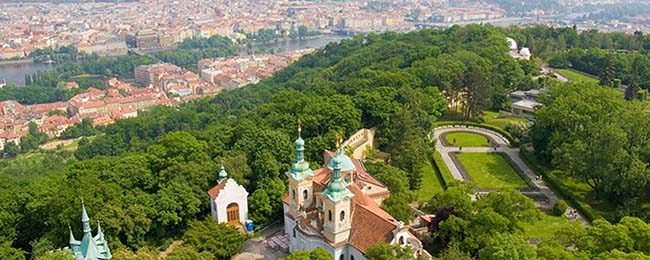
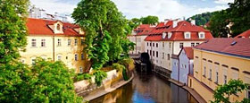
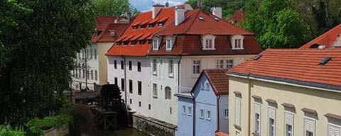

Praga - Praha
Città
Città dal glorioso passato e dal luminoso futuro, Praga è nata con la vocazione da capitale, sia politica che culturale, e tale è rimasta nei secoli. Centro principale del regno di Boemia prima e Capitale del Sacro Romano Impero poi, Praga ha guidato con autorità il paese sia nel periodo d'unita che dopo la divisione con la Slovacchia. E' una città unica ma con tante facce diverse e dal carattere deciso: lo dimostrano i suoi quartieri (Hradcany, Mala Strana, Stare Mesto, Nove Mesto) che si adagiano intorno alla Moldava e che fino alla fine del Settecento erano città tra loro indipendenti. Praga è culla di artisti e scenario di opere tra le più importanti: si pensi al Don Giovanni di Mozart o al Faust di Goethe o ancora alle trame Franz Kafka. Praga è la città del "socialismo dal volto umano" che durante la guerra fredda fu fermato solo dai carri armati russi, ma è anche il teatro della "rivoluzione di velluto" che ha portato il paese fuori dal comunismo ed ha aperto con una ventata di libertà le porte della città.
Trasporti
 Praga è dotata di uno dei migliori sistemi di trasporto pubblico d'Europa.
La metropolitana, i tram e gli autobus sono utilizzati dai due terzi della
popolazione cittadina e servono la maggior parte della città e la periferia.
In particolar modo la metropolitana facilita enormemente gli spostamenti
in città consentendo di ricoprire grandi distanze nel giro di pochi minuti.
Vi è anche la possibilità di acquistare la Praga card. Si tratta di
una tessera davvero speciale - della durata di 2, 3 e 4 giorni - che permette di
percorrere gratuitamente la città e di visitarne i maggiori monumenti:
la "Praga Card" è la soluzione ideale del turista che voglia conoscere al meglio
la capitale ceca. La Praga Card garantisce ai suoi possessori l'utilizzo gratuito della rete dei
trasporti pubblici - metro, bus, tram e Airport Express - Bus Tour gratuito di due ore,
entrata libera a 50 importanti attrazioni della città, tra le tante, Castello di Praga, Cattedrale di San Vito,
Museo della Città di Praga. Il costo della Praga Card va dai 46 euro per la 2 giorni ai 65 per la 4 giorni.
Praga è dotata di uno dei migliori sistemi di trasporto pubblico d'Europa.
La metropolitana, i tram e gli autobus sono utilizzati dai due terzi della
popolazione cittadina e servono la maggior parte della città e la periferia.
In particolar modo la metropolitana facilita enormemente gli spostamenti
in città consentendo di ricoprire grandi distanze nel giro di pochi minuti.
Vi è anche la possibilità di acquistare la Praga card. Si tratta di
una tessera davvero speciale - della durata di 2, 3 e 4 giorni - che permette di
percorrere gratuitamente la città e di visitarne i maggiori monumenti:
la "Praga Card" è la soluzione ideale del turista che voglia conoscere al meglio
la capitale ceca. La Praga Card garantisce ai suoi possessori l'utilizzo gratuito della rete dei
trasporti pubblici - metro, bus, tram e Airport Express - Bus Tour gratuito di due ore,
entrata libera a 50 importanti attrazioni della città, tra le tante, Castello di Praga, Cattedrale di San Vito,
Museo della Città di Praga. Il costo della Praga Card va dai 46 euro per la 2 giorni ai 65 per la 4 giorni.
Cosa vedere
- Praga "verde"
-
 I sette colli su cui Praga si adagia e che circondano le rive della Moldava sono il polmone verde di
una città che regala ad abitanti ed ospiti luoghi affascinanti per passeggiate rilassanti.
Il parco più bello è quello che si trova sulla collina di Petrin, che è situata nella zona di Mala Strana.
I sette colli su cui Praga si adagia e che circondano le rive della Moldava sono il polmone verde di
una città che regala ad abitanti ed ospiti luoghi affascinanti per passeggiate rilassanti.
Il parco più bello è quello che si trova sulla collina di Petrin, che è situata nella zona di Mala Strana.
- Personaggi illustri di Praga
-  E' forse il praghese più conosciuto ed è una vera propria istituzione della letteratura mondiale: Franz Kafka è nato in città per un periodo è stato tra gli abitanti del Vicolo d'Oro, suggestiva via del Castello. Tra i "figli adottivi" invece il più famoso è Mozart; qui il compositore terminò il "Don Giovanni" ed incantò i praghesi con le sue esibizioni. Ad entrambi la città dedica belle esposizioni; quella di Kafka è nella sua casa natale, mentre tutto quello che riguarda Mozart si visita a Villa Bertamka.
- Isola di Kampa
-  Piccolo lembo di terra circondato dalle acque del ruscello del Diavolo e da quelle della Moldava, Kampa è tra i luoghi preferiti dai giovani praghesi per il relax pomeridiano sui prati che ne ricoprono le rive. Chi ci trascorre la serata può gustare ottimo pesce nei tanti ristoranti e finire in bellezza con una birra nei locali più frequentati.
Vita notturna
 Praga è una città vivace e culturalmente molto attiva ed offre ai suoi abitanti ed ai turisti numerose possibilità per trascorrere piacevolmente il tempo libero. La serata può cominciare o concludersi in birreria, teatro suggestivo del rito irrinunciabile di un paese che produce "bionde" e "scure" tra le più famose. Jazz e Rock Club accolgono invece gli appassionati di musica alla ricerca di vecchie sonorità e nuove tendenze. Valida alternativa a concerti ed esibizioni sono gli spettacoli sperimentali allestiti dalle molte compagnie teatrali della città; non solo la prosa e il balletto ma anche pantomima e le tradizionali esibizioni di marionette. Tra i locali più In di Praga, spicca sicuramente la discoteca Karlovy Lázně, il club più grande dell’Europa Centrale, con i suoi 5 piani di musica e divertimento sfrenato.